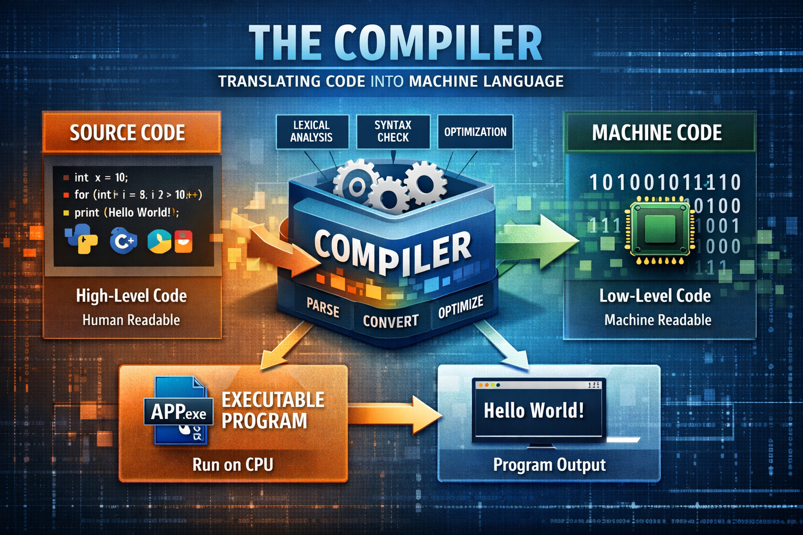
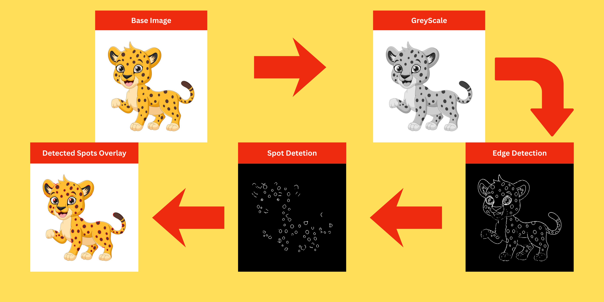

Hello World, I’m Bernhardt Steyn, and this page shares insights into my background, skills, and the projects I'm passionate about.
About Me
I am a computer science graduate from Stellenbosch University with a strong passion for software development and data science. My academic background has provided me with a solid foundation in problem-solving, algorithmic thinking, and system design, while also exposing me to a broad range of practical applications within the field of computing. I have hands-on experience working with several programming languages, including Java, Python, C, and C++, as well as with both SQL and NoSQL databases. These experiences have enabled me to adapt to different technical environments and to approach complex challenges with a structured and analytical mindset.
I am particularly drawn to the dynamic and ever-evolving nature of the information technology industry, as it continually presents opportunities for learning, innovation, and growth. I am motivated by the prospect of contributing to impactful software solutions while further developing my technical and professional skills. The pace at which new technologies emerge is both challenging and exciting, and I am eager to be an active participant in this rapidly changing landscape—though I do wish my game of golf were improving at a similar rate.
Projects

This project involves designing and implementing SIMPL, a small, imperative programming language, together with a compiler that translates SIMPL programs into a lower-level target representation. The focus of the project is on core compiler concepts such as lexical analysis, parsing, semantic checking, and code generation, while keeping the language itself deliberately minimal. By working with SIMPL, we gain practical experience in building a complete compiler pipeline and understanding how high-level programming constructs are systematically transformed into executable machine-level instructions.

This project involves building a basic spot detection system for cheetahs using simple image processing techniques. The goal is to identify dark spots on a cheetah's coat by applying steps such as grayscale conversion, thresholding, and edge detection. The detected spots are then be highlighted.
Documents
Contact
Papers
Machine Learning
This paper presents a comparative analysis of two supervised machine learning algorithms, k-Nearest Neighbours (kNN) and classification trees, applied to a dataset containing several data quality challenges. A comprehensive preprocessing pipeline was implemented to address missing values, redundant and noisy features, extreme outliers, mixed feature types, and class imbalance. The k parameter for the kNN algorithm was optimised using the elbow method, resulting in an optimal value of k = 3. The performance of the models was evaluated using 5-fold cross-validation to balance bias and variance. The classification tree achieved the highest mean accuracy of 94.78%, compared to 90.94% for the kNN algorithm. A Wilcoxon SignedRank Test with a significance level of α = 0.05 indicated no statistically significant difference between the models (p = 0.0625). These results demonstrate that both algorithms provide robust predictive performance when supported by appropriate data preprocessing techniques.
This study compares stochastic gradient descent (SGD), scaled conjugate gradient (SCG), and LeapFrog(LFO) on single-hidden-layer multilayer perceptrons for standard classification tasks. Models use standardised features, hidden width selected by cross-validation, and matched full-batch training budgets. On the tabular datasets, both LFO and SGD reached near-perfect accuracy, while SCG consistently underperformed. Statistical tests across the three datasets did not indicate significant differences after adjustment LFO and SGD emerge as practical defaults, with LFO offering a small stability edge.
Ensemble-based predictive models utilise a collection of supervised learning models. These collections can either be heterogeneous or homogeneous. The models employed are the k-nearest neighbour(KNN), the Na¨ıve Bayes classifier, support vector machine(SVM), classification tree and shallow neural networks. This paper attempts to implement these classification algorithms and construct an ensemble to test the effectiveness of ensemble-based predictive models. The dataset comprises information related to the identification of malignant and benign breast cancer tumours. The dataset, however, contains quality issues that need to be addressed before the models can be trained. It was determined that heterogeneous ensembles perform the best.
Papers
Artificial Intelligence
This study evaluates swarm-based meta heuristics for solving the Knight’s Tour Problem (KTP), comparing three Ant System (AS) variants, Ant Colony System (ACS), and Binary Particle Swarm Optimization (BPSO). Results show that antbased algorithms achieve a 100% success rate, while BPSO fails to find a valid tour. ACS demonstrates superior convergence and scalability, maintaining performance across larger board sizes. Statistical analysis confirms significant differences in success rate, convergence speed, and variability. The findings highlight the effectiveness of reinforcement-based search for constrained optimization problems.
This paper proposes a modified Particle Swarm Optimisation (PSO) algorithm for large-scale optimisation, combining Linearly Increasing Grouping and Subspace Initialisation. These techniques improve exploration by initially restricting the search to a subspace and progressively activating more dimensions during optimisation. Experimental results on 100-dimensional benchmark functions show improved convergence, swarm diversity, and stability compared to standard PSO.
This paper compares two Differential Evolution variants for image segmentation, using entropy and inter-class variance as fitness functions. Segmentation quality is evaluated using Dice Score, Jaccard Index, and convergence behaviour. Results show that the inter-class variance-based approach consistently achieves superior accuracy and stability. Statistical analysis confirms the significance of these performance differences, supporting the use o
Different attractors are a common technique used to alter the ratio between exploration and exploitation. This paper examines the performance of particle swarm optimisation when using variations of the standard inertia-weight pso. The variations are compared to the standard inertia-weighted PSO. The study concluded that the variation with the correct approach can perfor
Coevolutionary techniques in combination with particle swarm optimisation and neural networks have been shown to be very successful in finding strong game-playing agents. These have been particularly useful in deterministic games. This paper investigates the effectiveness of this approach when the extra complexity of stacking is involved in the game. The game used to test is The Last Captain. The performance is measured against random playing agents. The performance is also tested against a static evaluation function. The particle swarm and neural network are optimised for The Last Captain.
Papers
Other
This report provides an exploration of procedurally generated roguelike maps under non-stationary difficulty. Two agents are used to evaluate the PCG framework: (i) PPO with LSTM memory, action masking, and Random Network Distillation (RND), and (ii) a PSOPPO hybrid. Exploration is operationalised as the mean fraction of unique, reachable tiles visited per map. We evaluate under compound per-level scaling of 2%, 3%, and 5%, with treasure placements providing extrinsic incentives. Metrics include exploration rate, win rate to a fixed depth (discrete), depth-to-failure in endless runs (continuous), actions per level, and sample-efficiency on held-out seeds. Results show PPO(LSTM+masking+RND) achieves higher exploration and degrades more gracefully with scaling than PSO-PPO;
Object detection is one of the most relevant fields in the current landscape of computer science. This has led to many techniques that have been developed to solve the challenges involved in this field. The challenge this paper focuses on is applying techniques to a multispectrum image landscape. This paper compares a Siamese Neural Network with standard image embedding in both the normal and infrared light spectrums to determine if these techniques are viable for multi-spectrum use, as well as determining if standard detection libraries like YOLO are applicable in a multi-spectrum landscape. The results demonstrate that these techniques are applicable, however there are challenges with the application in the multispectrum landscape.
This project implements a lossless text compression tool using the Burrows-Wheeler Transform (BWT) followed by Huffman coding. The tool is written in C, supports both compression and decompression, and is tested on thirty synthetic text files. While effective on low-entropy data, the tool is outperformed by bzip2 and xz in terms of compression ratio. Statistical testing using the Friedman test confirms these differences are significant. The implementation is functionally correct and demonstrates the viability of BWT-enhanced Huffman coding, though further improvements are needed to match modern compression utilities.
This report will focus on investigating the statistical significance of themes on a websites conversion rate. For the themes there are two option either light or dark. To most the option of which is better should be obvious as we want to keep those bugs away but we will look at this from a statistical view. The data we will use models a website wherein there exist the option to be in either light or dark mode.